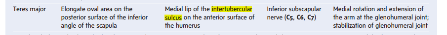
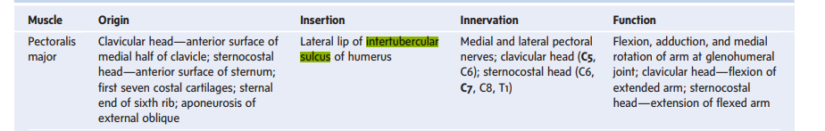
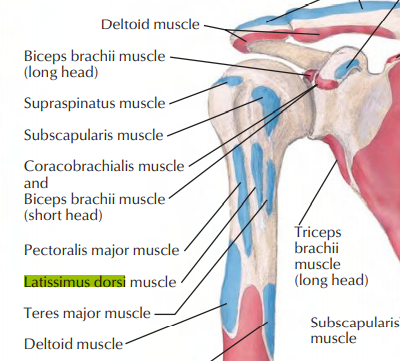
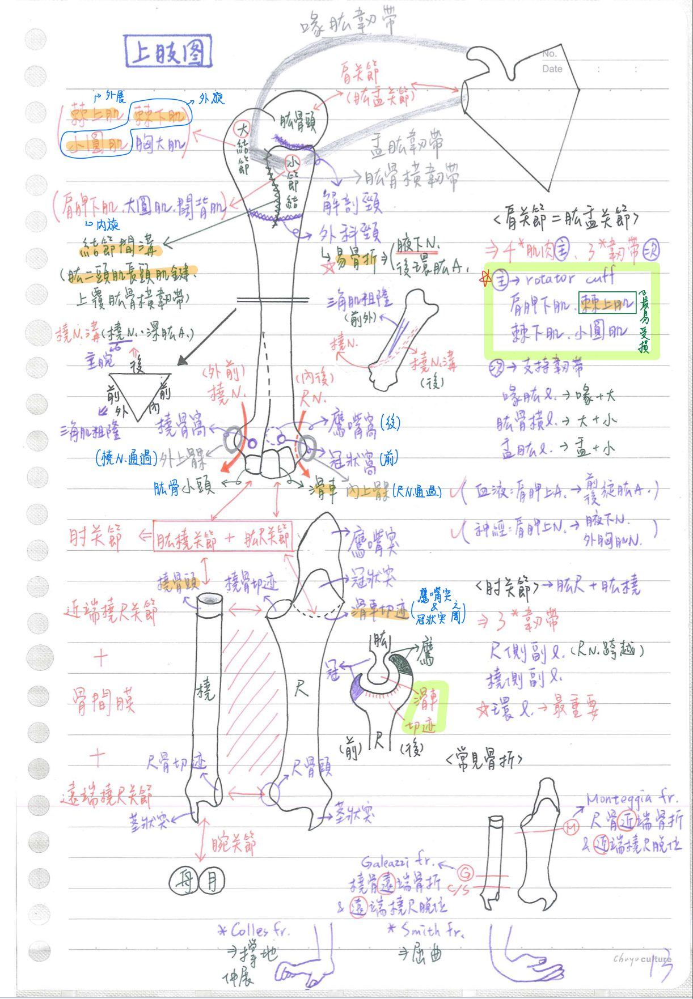
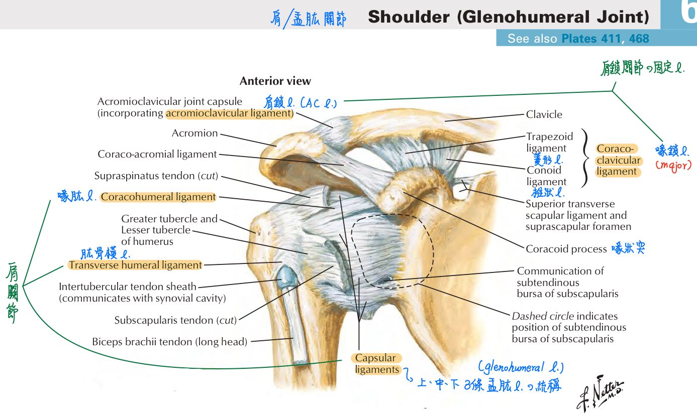
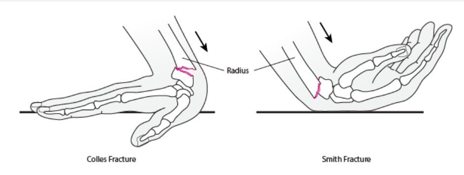
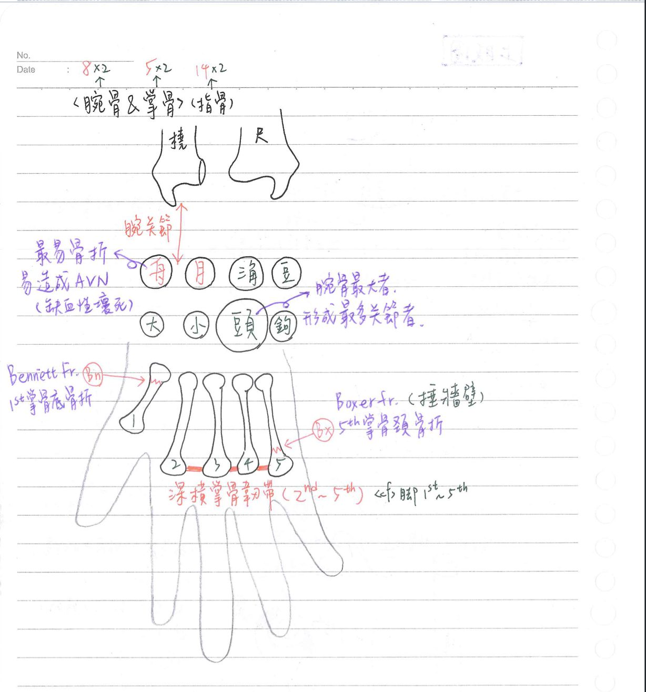

🦴 骨骼系統(上肢)
肱骨、橈骨&尺骨
上肢骨骼總覽：
- 上臂：肱骨(humerus)
- 前臂：橈骨(radius, 外側)、尺骨(ulna, 內側)
- 腕(wrist)：左右各8塊(tips：舟月三角豆，大小頭鉤)
- 近端(橈側—>尺側)：舟狀骨(scaphoid)、月狀骨(lunate)、三角骨(triquetrum)、豆狀骨(pisiform)
- 遠端(橈側—>尺側)：大菱形骨(trapezium)、小菱形骨(trapezoid)、頭狀骨(capitate)、鉤狀骨(hamate)
- 手：掌骨(metacarpal) x5、指骨(phalanx) x14
肩關節/盂肱關節(glenohumeral joint)
- 大部分關節固定主要靠韌帶；只有肩關節固定主要是靠肌肉
- 特點：全身活動度最大的關節；最易脫臼的關節
- 構造：肱股頭-肩胛骨(關節盂)；屬於球窩關節
- 固定主力：肩旋轉袖口肌群(rotator cuff) →肩胛下肌、棘上肌、棘下肌、小圓肌
- 支持韌帶：3條
- 盂肱韌帶(glenohumeral l.)：肩胛骨(關節盂)-肱骨(小結節)
- 喙肱韌帶(coracohumeral l.)：肩胛骨(喙狀突)-肱骨(大結節)
- ★肱骨橫韌帶(transverse humeral l.)：肱骨(大結節)-肱骨(小結節)
- ★★血液供應：肩胛上A、前/後環肱A
- 神經支配：肩胛上N、腋N(=趙的"腋下神經")、外胸(肌)N(lateral pectoral nerve)
- ★肩關節脫位(dislocation)：最易損傷腋N
- 由於rotator cuff沒有保護到肩關節的下方⇒所以肩關節脫位時最易往下脫位
- 腋N從四角間隙穿出之處即在肩關節之下方，因此最易受傷
肱骨(humerus)
- 肱骨頭(head)：與肩胛骨關節盂形成肩關節(全身關節脫臼率NO.1)
- 肱骨頸(neck)：
- 解剖頸：位於大、小結節之近端
- 外科頸：位於大、小結節之遠端；較易骨折處
※★★★★外科頸骨折(易骨折)：腋N(支配三角肌)、後環肱A(posterior circumflex humeral a.)受損
- 肱骨結節(tubercle)：
- 大結節(greater tubercle)：@肱骨近端外側，為棘上肌、棘下肌、小圓肌、
胸大肌之附著處
- 小結節(lesser tubercle)：@肱骨近端內側，為肩胛下肌、
大圓肌、闊背肌之附著處
- 結節間溝(intertubercular groove)：肱二頭肌(長頭)肌腱通過、闊背肌、大圓肌、胸大肌附著，上覆有肱骨橫韌帶(transverse humeral l.)
備註
- 大結節沒有胸大肌附著
- 小結節沒有大圓肌、闊背肌附著
- 勘誤資料：2021(Gray's anatomy) 大圓肌、胸大肌分別附著於結節間溝的內側唇(Medial lip)與外側唇(Lateral lip)



- 大結節(greater tubercle)：@肱骨近端外側，為棘上肌、棘下肌、小圓肌、
- 肱骨骨幹(shaft)：三稜柱(前內面、前外面、後面)
- 三角肌粗隆(deltoid tuberosity)：位於前外面；呈V字型；三角肌(腋N.支配)之附著處
- 橈神經溝(radial groove, radial sulcus, spiral groove)：位於後面：橈N、深肱A通過；肱骨幹骨折常見處
- ★★肱骨幹骨折(國考題：三角肌粗隆的位置骨折)：橈N[⇒垂腕症(drop wrist)]、深肱A受損
- 肱骨遠端：1髁(condyle)+2上髁(epicondyles)+3窩(fossa)
- 髁(condyle)：
(1)滑車(trochlea)：內側；與尺骨滑車切跡形成—>肱尺關節
(2)肱骨小頭(capitulum)：外側；與橈骨頭(關節小窩)形成—>肱橈關節
※肱尺關節+肱橈關節=肘關節
- 上髁(epicondyle)：
(1)★內上髁：尺N 通過內上髁後方；前臂屈肌附著處 [hint：內 收]
(2)外上髁：橈N通過外上髁前方；前臂伸肌附著處
- 窩(fossa)：
(1)橈骨窩(radial fossa)：位於腹面，肱骨小頭之上方；與橈骨頭形成→肱橈關節
(2)冠狀窩(coronoid fossa)：位於腹面，滑車之上方；與尺骨冠狀突(coronoid process)形成→肱尺關節
(3)鷹嘴窩(olecranon fossa)：位於背面；滑車之上方；與尺骨鷹嘴突形成—>肱尺關節
※tip：窩(fossa)—>突(process)；頭—>切跡 ，以凸的那邊命名(EX：橈骨頭在橈骨上)
- 髁(condyle)：
橈骨(radius)
- 近端：
- 橈骨頭：圓盤結構，具關節小窩(fovea)和關節環圍(circumference)
- 橈骨頸
- ★橈骨粗隆(tuberosity)：前內側突起，肱二頭肌附著處
- 骨幹(shaft)：三稜柱(前、後、外側面)
- 外側面粗糙，為旋前圓肌附著處
- 骨間膜(interosseous membrane)：位於橈骨&尺骨骨幹之間，屬韌帶縫合(微動關節)
- 遠端：
- 莖狀突(styloid process)：位於橈骨遠端外側
- 關節小面(facet)x2：與舟狀骨、月狀骨分別相關節
- ★尺骨切跡(ulnar notch)：位於橈骨遠端內側
- 橈骨結節：位於橈骨遠端後背側，伸拇指長肌之滑輪
- 近端橈尺關節(滑車關節)=橈骨的橈骨頭(關節環圍)+尺骨的橈骨切跡
- 遠端橈尺關節(滑車關節)=尺骨的尺骨頭+橈骨的尺骨切跡
- 橈腕關節(橢圓關節)：橈骨關節小面+舟狀骨、月狀骨(僅有兩塊腕骨參與)
尺骨(ulnar)
- 近端：
- ★鷹嘴突(olecranon)：位於背面、較大(肘擊用的地方)；肱三頭肌、尺側曲腕肌、肘肌附著
- 冠狀突(coronoid process)：位於腹面，較小；肱肌、旋前圓肌、屈指淺肌、屈指深肌附著
- 滑車切跡(trochlear notch)：位於鷹嘴突、冠狀突之間
- 橈骨切跡(radial notch)：位於前外側
- 旋後肌嵴(supinator crest)：前外側突起；旋後肌附著處
- ★尺骨粗隆(tuberosity)：前內側突起；肱肌附著處
- 骨幹：三稜柱；前側面粗糙，具有旋前方肌附著
- 遠端：
- 莖狀突(styloid process)：位於尺骨遠端內側
- ★尺骨頭：圓突結構


前臂常見骨折：
- Monteggia fracture：尺骨骨幹近端骨折+近端橈尺關節脫位
- Galeazzi fracture：橈骨骨幹遠端骨折+遠端橈尺關節脫位
- Colles' fracture：橈骨遠端骨折+遠端向背側位移(跌倒時手掌撐地)
- Smith fracture：橈骨遠端骨折+遠端向腹側位移(跌倒時手背著地)

腕骨&掌骨、指骨
腕骨(carpal bone)：★舟狀骨、月狀骨→參與形成腕關節(橈腕關節)
- 舟狀骨(scaphoid)：最易骨折之腕骨，易造成缺血性壞死(avascular necrosis)
- 頭狀骨(capitate)：腕骨中最大者、形成關節最多者
掌骨(metacarpal bone)：
- 結構：底(base，近端)+體(body/shaft)+頸+頭(遠端)
- 常見掌骨骨折：
- Bennett fracture：第一掌骨底骨折
- 拳擊手骨折(boxer fracture)：第五掌骨頸骨折
- ★深橫掌骨韌帶(deep transverse metacarpal l.)：連結第二~第五掌骨頭→限制其相對運動
※★因為未連結第一~第二掌骨頭之間，所以大拇指有較大的活動範圍

📖 書本補充：與筆記不同或筆記沒寫到的地方
⚠️
以下為對照書本後整理，筆記原文未更動。肩帶（p.326）的補充放在「骨骼系統(胸廓&肩帶)」頁；肩、肘、腕關節（p.332–334）的補充與考題放在「骨骼系統(重要關節)」頁。
肱骨（p.327）
- 外科頸：肱骨骨折最常見的位置；骨折時易傷及腋神經和後旋肱動脈（與筆記一致）。
- 結節間（二頭肌）溝：肱二頭肌長頭肌腱通過，肱橫韌帶跨越其上。
- 外和內上髁：分別為前臂伸肌和屈肌的共同肌腱之附著處。
- 三個窩的時機（書上寫法比筆記清楚）：
- 橈骨窩：前臂屈曲時容納橈骨頭。
- 冠狀窩：前臂屈曲時容納尺骨冠狀突。
- 鷹嘴窩：前臂伸展時容納尺骨鷹嘴突。
- 橈神經（螺旋）溝：肱深動脈和橈神經通過。
- 書的提示：注意上肢骨折最常見的位置（外科頸）及會傷到的構造；熟記通過橈骨溝的構造。
尺骨和橈骨（p.328）
- 尺骨莖突：尺側韌帶的附著處。
- 橈骨莖突：肱橈肌和橈側韌帶的附著處（筆記只寫位置）。
- 橈骨頭：與肱骨小頭及尺骨的橈骨切跡形成關節，被環狀韌帶固定。
- 尺骨頭：書上寫與橈骨的尺骨切跡「及腕骨」形成關節。Claude 註：一般教科書中尺骨頭與腕骨之間隔著關節盤，並不直接參與橈腕關節（筆記與 109-1-31 都寫只有舟狀骨、月狀骨接橈骨）。
- 113-1-26 解析：肱骨小頭在肱骨下方外側，接前臂外側的橈骨頭；尺骨頭位在尺骨下方，接腕骨側，不接肱骨。
腕骨及腕隧道（p.329–331）
- 名稱差異：筆記的「大菱形骨、小菱形骨」，書上稱大多角骨（trapezium）、小多角骨（trapezoid）。
- 記憶法（由近端往遠端、外側往內側）：Some Lovers Try Positions That They Can't Handle（Scaphoid、Lunate、Triquetrum、Pisiform、Trapezium、Trapezoid、Capitate、Hamate）；書建議至少記最內側和最外側共四塊。
- 腕隧道（筆記沒寫）：
- 外側：舟狀骨的結節及大多角骨。
- 內側：豆狀骨及鉤狀骨的鉤部。
- 中央（頂）：屈肌支持帶（橫腕韌帶）。
- 通過：正中神經（不含其掌皮支）、屈指淺肌、屈指深肌、屈拇長肌的肌腱。
- 書的提示：正中神經的掌皮支走在屈肌支持帶的前方（淺層），支配手掌的皮膚。
- 112-2-27 解析：尺動脈（與尺神經）在屈肌支持帶的淺層，不進腕隧道。
- 109-2-12 解析：豆狀骨在內側，附著其上的是尺側屈腕肌；掌長肌附著到手掌。
📝 書中歷屆考題（點選答案作答）
112-2-26p.327
三角肌粗隆 (deltoid tuberosity) 出現在下列何骨頭上？
113-1-26p.328
下列何構造會與肱骨小頭 (capitulum of humerus) 接觸，形成關節？
💡 肱骨小頭在肱骨下方外側，接前臂外側的橈骨；尺骨頭在尺骨下方，與腕骨側相接。
108-2-30p.330
當發生腕隧道症候群 (carpal tunnel syndrome) 時，手掌大拇指的那一條肌腱最可能受到影響？
109-1-31p.330
構成手腕 (wrist) 的骨頭中，那兩塊骨頭會直接與橈骨遠端 (distal end of radius) 相關節？
💡 橈骨側屬於外側，所以是舟狀骨和月狀骨。
109-2-12p.331
下列前臂 (forearm) 的肌肉中，那一塊附著在手腕的豆狀骨 (pisiform bone) 上？
💡 豆狀骨在內側，附著的是內側的尺側屈腕肌；旋前圓肌不附著腕骨，掌長肌附著到手掌。
112-2-27p.331
下列何者在屈肌支持帶 (flexor retinaculum) 的淺層？
💡 其餘三者都走腕隧道，在屈肌支持帶深層。